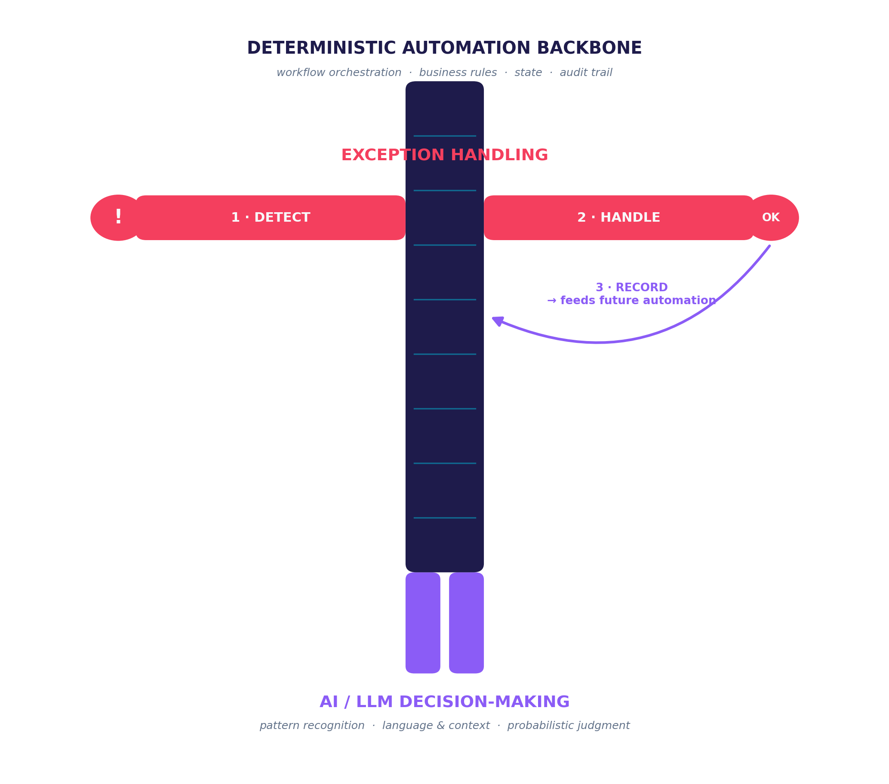

Every automation project eventually meets the same wall: the happy path is easy, and everything that isn't the happy path is where the project lives or dies. Large language models have not changed that fact. They have changed what the happy path can include—but the wall is still there, and pretending otherwise is the fastest way to ship an automation that quietly fails in production.
The Hype Problem: LLMs Are Not Oracles
A lot of the current enthusiasm around LLMs in clinical and operational workflows treats the model as if it were a lookup table with better manners—ask it a question, get the correct answer, move on. That framing is understandable; the outputs read as confident, fluent, and authoritative, which is exactly what a rules engine's output looks like too. But the mechanism underneath is nothing like a rules engine. An LLM is a probabilistic next-token predictor. It is sampling from a distribution over plausible continuations, shaped by training data and a prompt, not executing a fixed, auditable procedure that will return the same input-to-output mapping every time.
That distinction is not academic in a medical context. A model that summarizes a discharge note incorrectly, misreads a lab trend, or fabricates a citation isn't malfunctioning by its own standard—it is doing exactly what a probabilistic generator does: producing a highly plausible answer that sometimes is wrong. The failure mode isn't a crash or an error code. It's a fluent, well-formatted, wrong answer that looks identical in shape to a correct one. Deterministic software fails loudly—a null pointer, a stack trace, a rejected input. Probabilistic software fails quietly, in prose, and the hype cycle around LLMs has mostly trained users to stop checking.
None of this is an argument against using LLMs in automation. It's an argument against using them the way marketing decks imply they should be used: as a drop-in replacement for deterministic logic. They are a different kind of component, with a different failure signature, and the system around them has to be built with that signature in mind.
Exception Handling Is the Real Automation Problem
Strip away the AI angle for a moment and the older truth about automation still holds: an automation is not defined by how well it performs on the cases it was designed for. It is defined by what happens on the cases it wasn't designed for. Every real-world workflow—scheduling, prior authorization, lab result routing, claims adjudication, sepsis alerting—has a long tail of edge cases, malformed inputs, ambiguous states, and genuinely novel situations. If the system can't detect and efficiently respond to those exceptions, the automation is a failure, regardless of how good the core logic is. A 95%-automated workflow that silently mishandles the other 5% is often worse than a manual process, because nobody is watching the exceptions anymore.
Handling exceptions well is not one capability—it's three, and skipping any one of them breaks the loop.
1. Detect the exception
The system has to know, reliably, when it has left its zone of competence. That means explicit boundary conditions, confidence thresholds, schema and range validation, and—for an LLM component specifically—treating low-confidence or out-of-distribution outputs as exceptions rather than answers. A system that can't tell the difference between "I handled this" and "I produced output for this" will detect nothing.
2. Handle the exception efficiently
Detection without a fast, well-defined response just relocates the bottleneck. Efficient handling means a clear escalation path—to a human, to a fallback rule, to a narrower and more constrained model call—with enough context attached that the person or process picking it up isn't starting from zero. The goal is a graceful handoff measured in seconds or minutes, not a dropped ticket discovered a week later.
3. Record the inputs, the decision criteria, and the response
This is the step that turns exception handling from a cost center into an investment. Every exception, once resolved, is a labeled training example: what came in, what made it exceptional, what criteria the resolver used, and what the correct response was. Captured systematically, that record is exactly what's needed to either tighten the deterministic rules or fine-tune/prompt-engineer the AI component so the same exception is handled automatically next time. Skip this step and the system's exception rate is flat forever—every case gets re-litigated from scratch, no matter how many times it's been seen before.
It should also be noted that healthcare facilities are not all the same—the "correct answer" to one set of exception conditions may not be the correct answer for another facility, and that is another reason LLMs cannot be the complete solution. Each facility needs to be able to define its preferred answer, and that is not something an LLM is going to do efficiently, or perhaps ever.
AI and Automation Are Natural Partners
Put those two threads together and the right architecture becomes clear. AI and automation aren't competing paradigms—they're complementary, and each covers the other's weak spot. Deterministic automation is precise, auditable, and fast, but brittle: it only knows what it was explicitly told, and anything outside that scope has to be treated as an exception. AI, and LLMs in particular, are fluid and can generalize to situations no one anticipated, but they are probabilistic and can't be trusted, on their own, to know when they're wrong.
The synergy comes from letting each do the job it's actually good at. A deterministic automation backbone should own orchestration, business rules, state, and the audit trail—the parts of the system that must behave the same way every time and must be able to prove it. The AI component should be scoped to the judgment calls that benefit from its fluidity: interpreting free text, weighing ambiguous evidence, drafting a first pass. And the seam between them—the exception-handling layer—is what keeps the probabilistic part honest, catching its low-confidence and out-of-bounds moments and feeding them back as structured learning rather than silent errors.
The diagram below makes the anatomy explicit: a deterministic backbone down the center, with exception handling as the arms that detect and handle what falls outside the rules, and AI/LLM decision-making as the legs that give the system reach into fluid, ambiguous territory. Take away the backbone and the arms and legs have nothing to stand on. Take away the arms and legs and the system can't move past what it was explicitly programmed for. Neither one is optional; the synergy is the point.

Build it this way and the hype problem mostly resolves itself. Nobody needs to expect the LLM to always produce the right answer, because it was never the last line of defense. The backbone catches what it misses, the exception-handling loop learns from every miss, and the system gets more capable over time—not by hoping the model improves, but by an architecture designed to improve regardless.